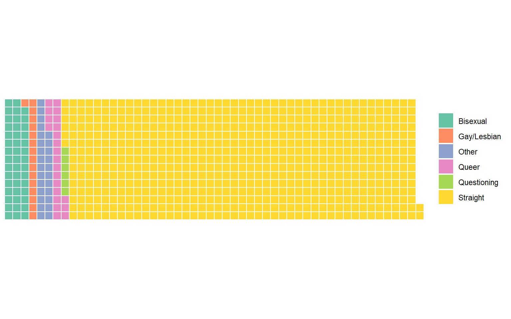
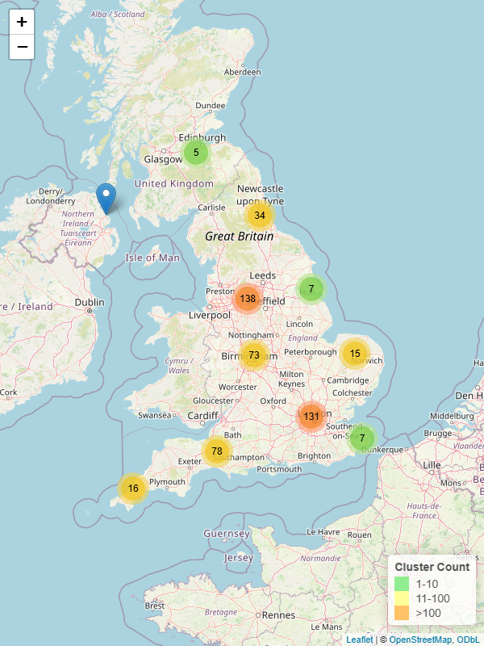

Male
48.7%
White British
86.9%
Aged 60+
64.7%


How politically engaged are folk singers? Compare by party, or pick a tab to see how engagement varies by age, ethnicity, sexuality, or organiser role.Which folk singing events do people attend most? Pick a tab to see how this varies by age, ethnicity, sexuality, or organiser role.What do folk singers prefer when they perform? Pick a tab to see how this varies by age, ethnicity, sexuality, or organiser role.